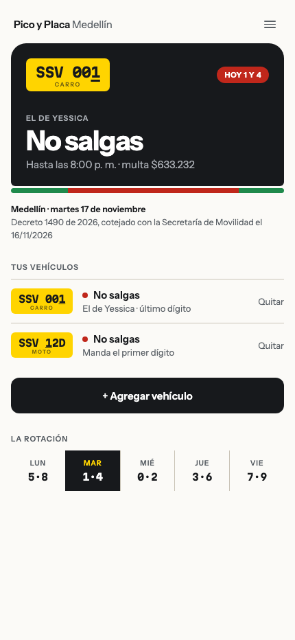
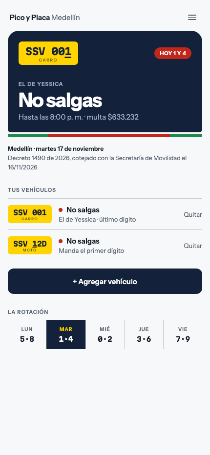
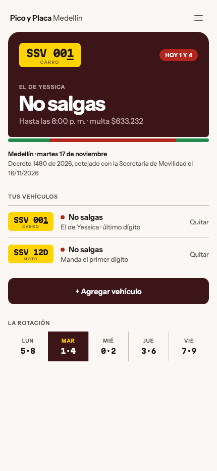

Las tres cambian la misma cosa: el color del bloque grande. El amarillo de la placa se queda en las tres, porque es el color legal de las placas de Colombia y es la identidad de la app. Y el bloque deja de pintarse del color de la respuesta: ahora el estado va en la etiqueta roja, en los puntos de la lista y en la barra del día, que es como lo hace una app seria.

Negro de tinta sobre papel. Es lo que usaría un documento: ninguna marca de color, el amarillo manda solo. La más sobria y la que mejor envejece.

Azul profundo, no el azul de plantilla. Es el color de la señalización y del que la gente se fía: bancos, tránsito, servicios. El más institucional.

Granate oscuro sobre papel cálido. Casi nadie lo usa, y con el amarillo de la placa es la pareja que más carácter tiene. La más difícil de confundir con otra app.